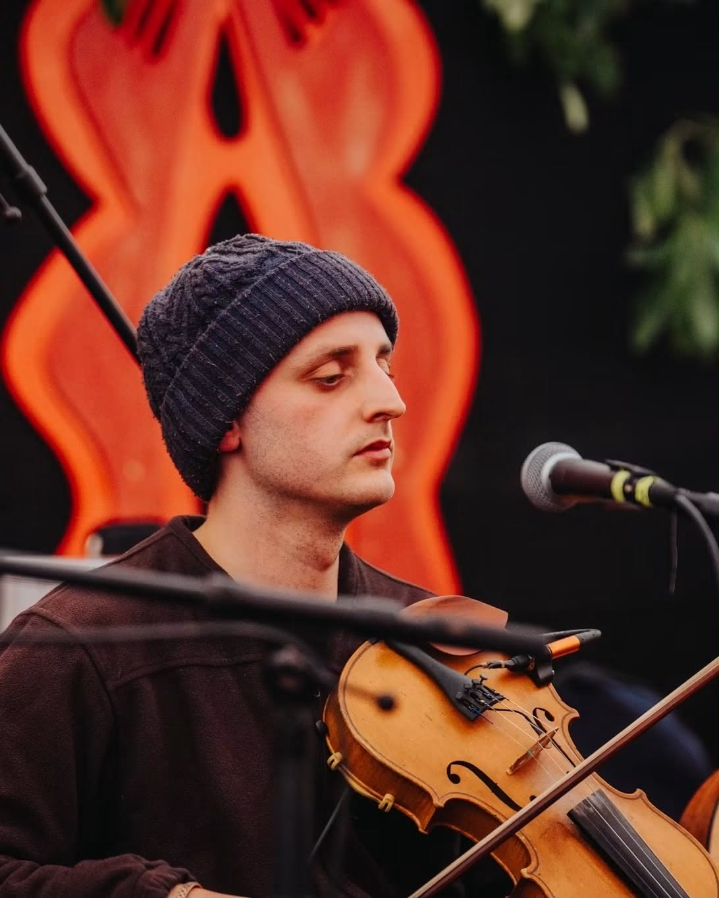
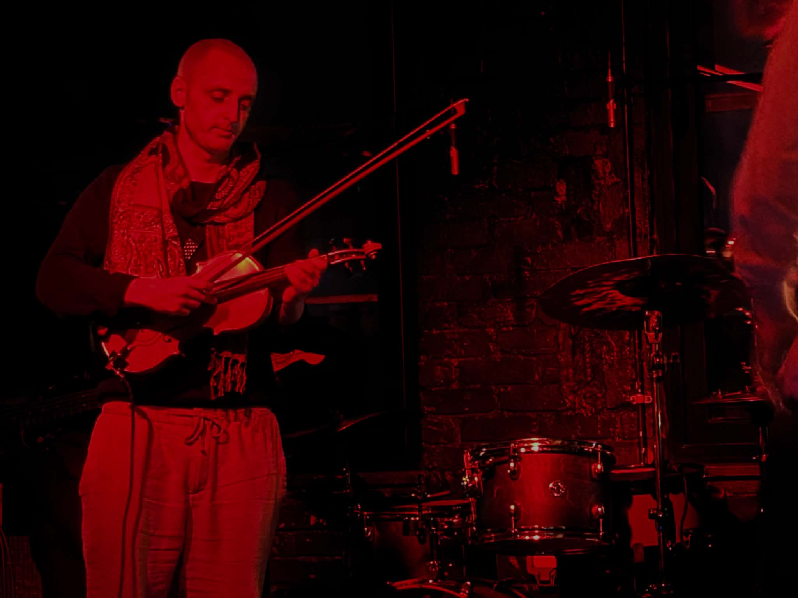

From first bow to Bruch
Technique, tone and expression, built patiently. Ed was taught by the lead violinist of the award-winning Liverpool Philharmonic, and passes that grounding on — without any of the tension that so often comes with it.
Music skills
Twenty years with the violin, fifteen behind a kit — orchestras, European tours, world music concerts and a jazz group. The best bit is still watching someone else find their sound.
Technique, tone and expression, built patiently. Ed was taught by the lead violinist of the award-winning Liverpool Philharmonic, and passes that grounding on — without any of the tension that so often comes with it.
Fifteen years on the kit and time with the Brighton Percussion Ensemble. Kit playing, hand drums and orchestral percussion — the parts that make a group lock together, and the confidence to sit in the middle of one.
Notation, harmony and the logic underneath the music you're playing. Taken alongside an instrument, or entirely on its own if theory is the bit you need to shore up.

On stage
Ed spent ten years in orchestras, including touring Europe. These days he curates world music concerts as a solo artist, drawing on Indian classical, flamenco and folk, and co-leads a jazz group.
It matters for teaching. Everything he asks a student to do, he's had to do himself — under pressure, in front of people, on a night when it wasn't going well.
However you learn best
Working through a grade syllabus? Ed will take you through it. Struggling with an orchestra part before the next rehearsal? Bring it along.
But he's an intuitive player, and a firm believer in training your ear so you can pick up a tune just by listening. Improvisation, world music, folk — whatever takes your fancy is fair game.
Co-leading the jazz group.

Who Ed teaches
No lesson looks quite like the last one. The pace changes, the goals change, the pleasure doesn't.
Small hands, short attention spans, enormous enthusiasm. Lessons with young beginners are built around games, silly noises and very short wins — a good note, a whole bar, a tune their family recognises.
Nobody gets told off for squeaking. Squeaking is part of it.
Plenty of Ed's students come to the violin late — some picking it up for the very first time in retirement, others returning to an instrument they put down forty years ago.
There's no age at which this stops being possible.
Online music lessons
A laptop or tablet, your instrument, and somewhere you don't mind making a noise. Headphones help; a fancy microphone doesn't.
More than you'd expect. Bow arm, grip, posture and stick height all read clearly on camera once you've found a sensible angle — he'll help you set that up in the first lesson.
Send a recording of the bit that isn't working and Ed will come back with something to try. Often quicker than waiting a week.
Possible when Ed is nearby — he moves between England and Bilbao. Say where you are on the booking form and he'll tell you what's workable.
Your turn
Beginner, returner, or somewhere in the middle — send Ed a note and he'll suggest where to start.
Book a music lesson